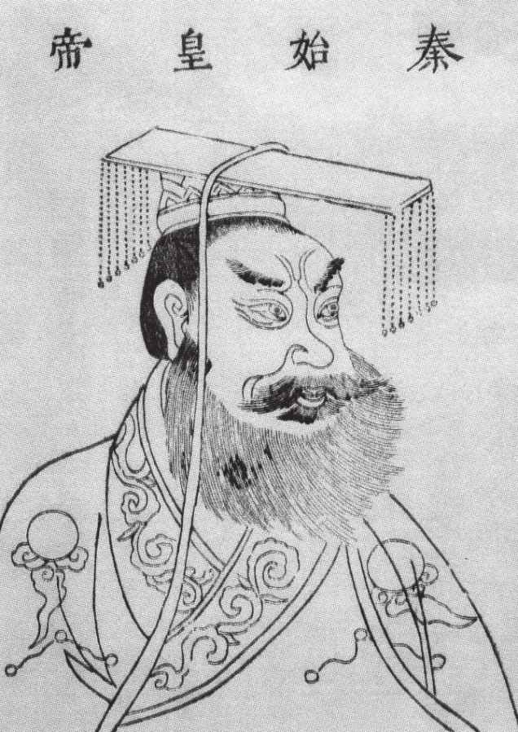
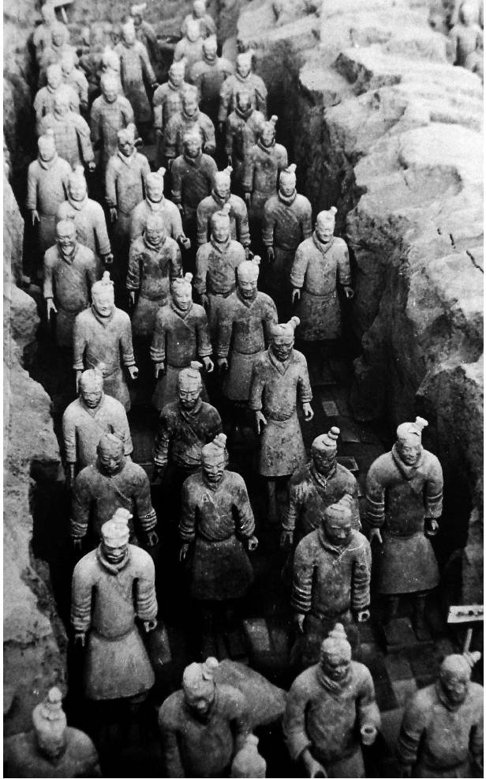
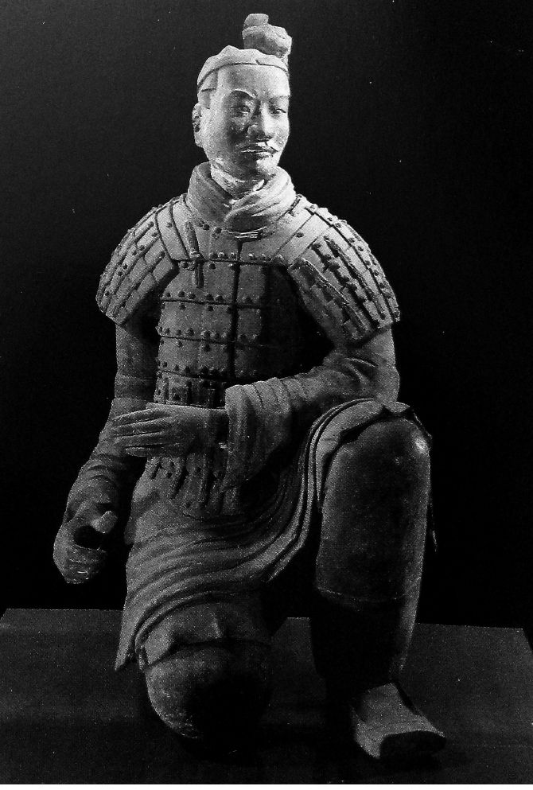
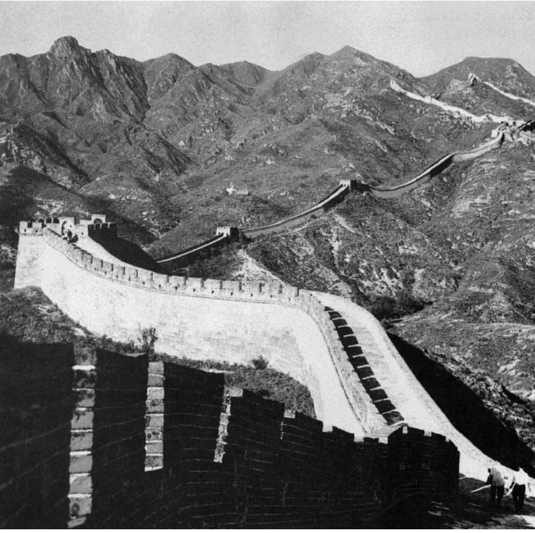

在中国长达数千年的历史上，有过三次从根本上改变了中国的政治和社会结构的大革命。第一次发生于公元前221年，它结束了领主封建制，创立了实行中央集权制的帝国；第二次发生于1911年，它结束了帝国，建立了共和国；第三次发生在1949年，建立了共产党领导的政权。
策动第一次大革命的是秦国的领导人。秦地处中国西北部的渭河流域，这一地理位置本身有助于秦国获得胜利，因为渭河流域大部分地区难攻易守。秦统治者可以进攻东面的其他国家而无后顾之忧。地处边远地区的位置也使秦军队由于经常要对蛮族作战而处于战备状态。事实上，秦人是最早用铁制武器取代青铜武器、用骑兵取代战车兵的中国人。秦胜利的另一重要因素是，公元前316年，秦占领了四川的产粮大平原；这大大地扩大了秦的地盘，增强了秦的力量，使秦与其他列国的关系有点如同早先马其顿与诸希腊城邦的关系那样。最后，秦统治者都是些能干而又野心勃勃的现实主义者，率先应用法家学说，将所有权力集中到自己手上。

图57 中国历史上的第一位皇帝秦始皇。
凭借上述这些有利条件，秦统治者不断地扩大自己的属地，征服了周围一个又一个国家。当时的人们恐惧地称“秦为野兽”，把秦无情的扩张比作“蚕食”。到公元前221年，秦统治者成为全中国的主人，他采用了始皇帝的称号。始皇帝就是“第一个皇帝”，他的继承人将为“第二个皇帝”，这样一代一代传下去，“至千万世，传之无穷”。
这位新皇帝开始将早先在本国取得辉煌成功的法家学说应用到全中国。他废除了所有的分封制国家和王国，将广阔的国土划分为若干郡县，每一郡县都配备一批由中央政府任命、并向中央政府负责的官员。他还解除了除原秦国军队之外的所有士兵的武装；下令迁徙各国的旧贵族到首都，以便监视他们；并把秦原来的卫戍部队派到全国各地。此外，这位新皇帝还通过统一度量衡和货币来实行经济集中化。
从后来的历史看，中国最重要的改革之一是废弃了早先在诸王国发展起来的写法众多的语言文字，而代之以全中国都能理解的统一文字。这种统一文字由于中国文字所具有的性质，被证明是一种非常有效且持久的统一的黏合剂。这种文字不是以表示一个词的语音成分的若干注音符号为基础，而是由大量的书写符号即汉字所组成，每一汉字表示一个物体或一个抽象概念。这种方法正同于西方的数字表示法。尽管西方人可以把“5”念成five、funf、cinque或cinq，但所有西方人都知道符号“5”的意思是什么。汉字这种表意文字的情况也是如此，它们有意义而无固定的发音。它们和数字一样，可以表示概念，但每个读者念的时候却可以根据自己的方言发音。因之，秦朝这种新的统一文字（它经过数次修改后一直存在到现在）是所有受过教育的中国人都能阅读并理解的，尽管他们所操的方言常常彼此听不懂。基于同一原因，这种文字也是外国人所能理解的，所以，受过教育的日本人、朝鲜人或越南人都能阅读汉文，但不会说一个汉字。这种文字对中国后来的民族统一，对中国文化乃至对整个东亚的影响来说，其重要性是不难想象的。

图58 秦朝第一个皇帝秦始皇陵墓中出土的真人大小的兵马俑（公元前246——前210年）。

图59 跪射武士俑。
秦王朝的这些改革侵害了许多既得利益集团，引起了激烈的反对。就文人学士而言，情况尤其如此，因为法家的学说和政策是他们最憎恶的。因此，始皇帝决定下令“焚书”，使文人学士丧失知识方面的靠山。于是，几乎所有的经典都被付之一炬，只有那些有实用价值的书，如医学、农业和卜筮方面的书，给保存了下来。但是，“焚书”计划实际上失败了，因为那些文人学士不惜冒一切风险把书藏起来，或者在交出之前将它们整本地背下来。后来，秦王朝覆灭之后，传统文献中的大部分作品又由于先前藏下的书和老人们的回忆而恢复原状。不过，秦的迫害有效地阻抑了周时期所特有的百家争鸣的局面，中国思想的黄金时代结束了。
知识方面的损失由于更有效地利用人力资源和自然资源所带来的显著经济效益而得到补偿。度量衡和货币的统一促进了经济发展。修筑的驿道网以首都为中心，向各方伸展到大部分边远地区。为了最大限度地利用这些驿道，秦始皇统一了中国两轮车的车轴长度——这一措施是必不可少的，因为车轮在松散的沙土上留下了很深的车辙，使每一辆车子要么循着现有的车辙走，要么以新的车轴来适应之。秦始皇还利用国家的统一和力量将疆界向南扩展到现在的越南。在西北面，击退了游牧部落；为了防止他们卷土重来，还修筑了举世闻名的长城。长城西起临洮，东至辽东，延袤万余里。为了完成这一巨大工程，耗去了大量生命，以致2000多年后的今天，人们仍要谈起这一事实：有100万人为修筑长城而死去，长城的每一块石头都值一条人命。正如文人学士诅咒皇帝“焚书”那样，老百姓都为筑长城的事诅咒皇帝。
正是这种普遍的憎恶，加上秦王朝缺乏能干的继承人，成了民众奋起造反和秦始皇去世不久秦王朝很快覆灭的原因。不过，秦的统治虽然如此短命，却给中国留下了深刻且持久的印记。中国已由分封制的国家改变为中央集权制的帝国，并一直存在到20世纪初。如果说中国的英文名字（China）由秦（Ch'in）而来，那是恰当的。

图60 中国万里长城的一段。长城最先修建于公元前3世纪的秦朝，图中所示为明朝重修的砖墙。